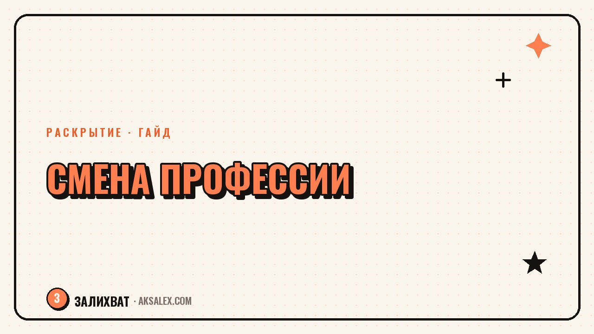

Как сменить профессию после 40 и не начать с нуля

Фраза «после сорока поздно начинать с нуля» пугает сильнее, чем сама смена профессии, но она основана на неверной посылке - начинать с нуля не приходится почти никогда. За пятнадцать-двадцать лет работы накапливаются навыки, которые не называются напрямую названием новой профессии, но отлично в неё переносятся. Разберём, как провести инвентаризацию накопленного опыта и перейти в новую сферу, не теряя доход на полгода и не притворяясь junior-специалистом без прошлого.
Почему «начать с нуля» - это почти всегда преувеличение
Человек, который двадцать лет вёл переговоры с поставщиками, не теряет этот навык при переходе в другую сферу - он лишь перестаёт называться так же конкретно. Умение держать сложный разговор, планировать бюджет, разбираться в людях или доводить проект до конца никуда не девается при смене отрасли.
С нуля приходится осваивать узкую техническую часть новой профессии - конкретные инструменты, терминологию, форматы отчётности. Это занимает недели и месяцы, а не годы, если рядом есть перенесённые навыки, на которые можно опереться.
С нуля начинает не человек, который меняет профессию в сорок, а человек, который забыл посчитать всё, что уже умеет.
Инвентаризация навыков: что переносится в новую сферу
Первый шаг смены профессии - не курсы и не резюме, а честный список того, что уже умеешь делать хорошо, отдельно от названия текущей должности. Полезно разделить навыки на три категории: профессиональные (специфичные для отрасли), переносимые (работают в любой сфере) и личные качества, которые ценятся работодателями.
Переносимые навыки, которые чаще всего недооценивают
- Управление людьми и проектами, даже неформальное
- Умение объяснять сложное понятным языком - клиентам, новичкам, коллегам
- Ведение переговоров и работа с возражениями
- Организация процессов с нуля в условиях нехватки ресурсов
- Умение учиться новому под давлением сроков
Этот список стоит составлять не по памяти, а перечитывая реальные задачи за последние пять-семь лет - часто обнаруживается в разы больше переносимых навыков, чем казалось на первый взгляд.
Примеры переноса опыта между профессиями
Переход редко выглядит как полный разрыв с прошлым - чаще это смещение в сторону, где прежний опыт работает иначе, но не исчезает.
| Откуда | Куда | Что переносится |
|---|---|---|
| Учитель | Корпоративное обучение и методист курсов | Структурирование материала, работа с группой, терпение к разному темпу усвоения |
| Бухгалтер | Финансовый аналитик или консультант для малого бизнеса | Работа с цифрами, знание отчётности, внимание к деталям |
| Менеджер по продажам | HR и рекрутинг | Навык переговоров, умение быстро оценивать людей, работа с возражениями |
| Инженер производства | Проектный менеджмент в другой отрасли | Планирование ресурсов, контроль сроков, работа с документацией |
План перехода без потери дохода: разбор по шагам
Шаг 1. Проверка на малом масштабе без увольнения
Прежде чем менять основную работу, стоит попробовать новую сферу сбоку - подработка по вечерам, волонтёрский проект, фриланс-заказ выходного дня. Это дешёвый способ проверить, насколько реальная работа совпадает с представлением о ней.
Шаг 2. Точечное обучение, а не диплом с нуля
Вместо второго высшего образования чаще достаточно закрыть конкретные пробелы: один профильный курс, пара сертификатов, практические задачи в портфолио. Полное переобучение нужно редко - в основном в сферах со строгим лицензированием вроде медицины.
Шаг 3. Параллельный переход, а не резкий прыжок
Оптимальный сценарий - совмещать текущую работу с подработкой в новой сфере несколько месяцев, постепенно смещая баланс дохода. Это снижает финансовый риск и даёт время убедиться в правильности выбора.
Частые ошибки при смене профессии после 40
Главная ошибка - писать резюме так, будто предыдущего опыта не существовало, и позиционировать себя как junior без прошлого. Это занижает ценность в глазах работодателя и выглядит неубедительно - двадцать лет жизни не спрячешь в анкете.
- Сравнивать себя с 22-летними выпускниками вместо того, чтобы показывать свои сильные стороны
- Увольняться с текущей работы до того, как появился хотя бы один заказ или оффер в новой сфере
- Проходить десятки курсов вместо практики и реальных проектов в портфолио
Как превратить опыт в преимущество на собеседовании
На собеседовании стоит прямо говорить о смене сферы и объяснять её логику: что в новой профессии продолжает прежние сильные стороны, а что осознанно осваивается заново. Работодатели ценят зрелость решения и способность объяснить мотивацию больше, чем формальное соответствие возрасту типичного кандидата.
Стоит заранее подготовить конкретные примеры из прошлого опыта, которые иллюстрируют нужные для новой роли навыки - не общие фразы про ответственность, а реальные ситуации с результатом. Такие примеры убеждают сильнее любого диплома о новом образовании.
Частые вопросы
Реально ли сменить профессию после 40 без финансовой подушки?
Сложнее, но возможно через постепенный переход - подработку в новой сфере параллельно с основной работой. Резкий уход без запасного дохода повышает риск и стресс, которых проще избежать плавным переходом.
Нужно ли получать новое высшее образование для смены профессии?
В большинстве сфер достаточно профильных курсов и практики, диплом нужен в основном там, где есть обязательное лицензирование, например в медицине или юриспруденции в некоторых направлениях.
Как объяснить работодателю резкую смену сферы в резюме?
Стоит честно и коротко описать логику перехода - какие навыки переносятся и почему новая сфера интересна именно сейчас. Это звучит убедительнее, чем попытка скрыть прошлый опыт.
Берут ли на работу после 40 без опыта в новой сфере?
Берут, если кандидат показывает перенесённые навыки и реальные примеры из практики, а не только теоретическую подготовку. Возраст реже становится препятствием, чем страх кандидата его озвучивать.
Сколько времени обычно занимает смена профессии после 40?
При параллельном переходе с подработкой - от полугода до полутора лет до полноценного перехода на новый доход. Срок сильно зависит от сферы и от того, сколько навыков уже переносится из прошлого опыта.
Раз тема оказалась полезной, вот что почитать следующим. Без эзотерики: конкретные методы и вопросы, которые помогают понять, чего ты хочешь на самом деле.
Читать статью →а не вручную